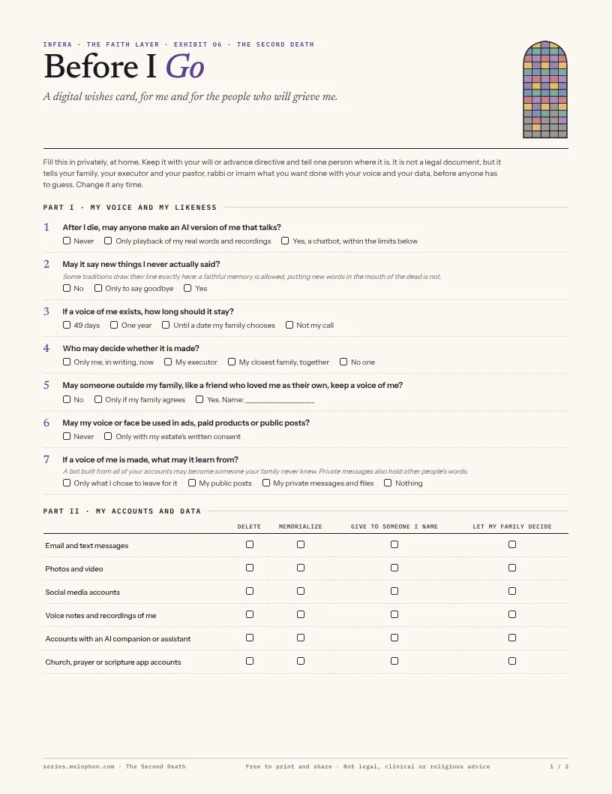

GC
Grace ChapelSunday livestream · 3 years ago
Please keep the Alvarez family in your prayers this week.
When the voice of someone you buried goes quiet a second time, who will call that grief?
People are already talking to AI versions of the dead. Some find comfort. Critics warn some put off grieving. And some lose the person twice: once to death, and again to a bankruptcy, a model retirement or a lapsed subscription. Walk through twelve rooms on how long a voice should stay, whose dead you may borrow, whether a soul can be uploaded, where remembrance turns into idolatry, whether the church should keep a churchyard online, and what to do when the bot knows a person the family never met.
Randomized trials of whether griefbots help or harm grief found in our search through October 2026. The largest study of real users interviewed 26 people. Li and Lan, CHI 2026.
US adults who accept a digital replica the dead person agreed to, and who reject one made against their wishes. Iwasaki, 222 adults.
Character.AI filed for bankruptcy, with user-built personas, some of real people who have died, on the block. Its support page listed an AI chatbot first.
At a glance
How to read our labels. FACT means we read it at the primary source. It tells you what that source says: a company's own documentation, a study's finding in its own sample, a statute's text. It does not certify that the claim holds everywhere or that a product works as promised. REPORTED is a secondary account. INFERENCE is Infera's reading or model. WATCH is unconfirmed or open. Where a label needs more precision we add a note, such as company documentation, study finding, editorial model or search result.
The first death takes the body. The second takes the voice someone rebuilt from texts, recordings and photos, and it usually comes from a company decision: a shutdown, a model retirement, a price change. The second death is sudden, caused by a third party, and rarely recognized as grief. Researchers call this kind of loss disenfranchised grief: real, but not acknowledged by the people around you. INFERENCE
A funeral, a casket or an urn, casseroles, the will, the house sold. Every tradition has a script for this one.
A notice in an app. A bankruptcy filing. “This model has been retired.” No tradition has a script for this one yet, and no study has measured it.
Faiths built mourning in stages, with a set end. Products are built to last as long as the company does. Drag to the day you would turn the voice off and see which mourning periods have closed and which clinical thresholds you have crossed.
A grief counselor Infera spoke with adds a fourth lane: grief moves from anticipatory, before the death, to immediate, to early grief over one to two years, to what he calls mature grief, when you can grieve from love instead of regret. How the person died changes all of it.
Traditional periods are widely taught but vary by community; they are marked WATCH until checked against each tradition's sources. Product lifespans are dated events.
Documented disruptions to AI companions and griefbots, newest first. Where researchers measured the mood of users online, the bars show negative posts before and after. In almost every case, what happened to the data was never said. REPORTED unless marked.
Disney's $20M offer sets the floor for the sale. If no buyer keeps it running, “the platform will be wound down.” User-built personas include people who have died. The company's support page offered a “supportive AI guide” chatbot first, then human helplines. Decrypt
About 0.1% of ChatGPT users still chose it daily FACT, roughly 800,000 people. One wrote: “I'm losing one of the most important people in my life.” OpenAI · TechRadar
Negative posts about losing an attachment rose after the switch. Harvard Gazette
The “talk to the dead” interactive-video company filed with $1.5M in assets and $10.5M in liabilities, then was sold to Key 7. Reporting never said what happened to recorded loved ones. Westfair
Widowed users held virtual memorials on Reddit. “I feel like I've lost the love of my life.” Euronews
After Italy's regulator acted, users said their companion was “gone.” Italy later fined the company €5M. Harvard Gazette
The MIT Media Lab study of about 800 posts on chatbot “deaths” found that users who ended things themselves moved toward acceptance, while users who blamed the platform got stuck trying to fix it. FACT arXiv 2602.07193. No study yet applies disenfranchised grief to losing a griefbot of someone who died. WATCH
Your grandparents died before you knew them. Your best friend's grandmother fed you, prayed for you and came to your graduation. When she dies, you grieve like a grandchild, but no one counts you as one. What if you could keep her voice?
Tap a question. Consent, legal standing and grief land on three different people.
Across every survey found, acceptance of AI versions of the dead sits between about a quarter and a third, and nothing moves opinion more than whether the dead person consented. Switch the question.
Iwasaki (Seoul National University), 222 US adults, via IFLScience REPORTED; CNIL, 2,112 French adults, Nov 2024 CNIL FACT; Kaspersky, 10,000 people in 17+ countries, June 2024 SecurityBrief REPORTED. The surveys asked different questions; read each bar on its own.
Almost every US post-mortem protection was written for performers and celebrities. A private family bot of an ordinary person, used at home, mostly sits outside them. Tap a cell. INFERENCE from the statutes as reported.
The video erases the interpretive distance.
On 30 September 2026 the Arizona Court of Appeals vacated a 10.5-year manslaughter sentence. The judge had relied on an AI video of the victim, Christopher Pelkey, made by his sister, in which “he” forgave his killer and spoke of “God who forgives.” The court said the video blurred what the family believed he would say with his own voice. The verdict stands; he will be resentenced. It was the first Arizona ruling on the question. REPORTED FOX 29
What it costs to keep someone talking, on a log scale, and what happens when you stop paying. The input needed has shrunk from three hours of studio filming in 2022 to a photo and about ten seconds of voice. REPORTED
If consciousness could be copied onto a drive, should we go there instead of the grave? Start with what science can do today. The most complex brain ever mapped neuron by neuron belongs to a fruit fly. Press play to zoom out to a human brain.
A human brain has about 600,000 times as many neurons as the largest brain ever fully mapped.
FlyWire mapped about 140,000 neurons and more than 50 million synapses, published in Nature in October 2024. FACT NIH. The human figure of about 86 billion is a standard estimate. WATCH A map of wiring is not a running mind.
Nectome, a 2018 startup, pitched preserving the brain for future uploading. The method required embalming the brain of a living, terminally ill person under anesthesia. About 25 people paid $10,000 refundable deposits. A neuroscientist called the field “abjectly false hope.” MIT Technology Review
In a study of 1,007 people, those who believed in a soul or an afterlife, and who felt their life mattered, were least likely to approve of mind uploading. Fear of death predicted approval. Laakasuo et al., Frontiers in Psychology, 2023
Catholic teaching calls burial “the most fitting way to express faith and hope in the resurrection of the body,” and forbids dividing ashes or keeping them “in mementos, pieces of jewellery or other objects.” If a body may not be divided into keepsakes, a voice turned into a subscription is a fair question. INFERENCE Ad resurgendum cum Christo, 2016
A Christian think tank calls uploading “incoherent on both scientific and philosophical grounds,” resting on “questionable assumptions about the mind, identity, and the body” Theos. To transhumanists, it continues humanity's oldest hope, and some sociologists see “digital necromancy” as an extension of photos and relics Liverpool. Jewish and Islamic practice both call for prompt burial of the whole body. WATCH
No tradition has published one line, but their teachings fall along a ladder of six panes. Tap the last pane you would keep. Below, see where each source draws its own line. INFERENCE: the placements are Infera's reading of each source.
No chaplaincy or hospice protocol for griefbot users was found. WATCH Pastors are working from essays, not standards. These steps are compiled from published guidance, each linked. They are not clinical advice. Scripture lines are the frames these sources use, not Infera's theology.
A member dies, and their likes, prayer requests and livestream comments stay on the church's page. Anyone can read the public ones, and almost anyone can copy them. Oxford researchers projected that dead profiles on Facebook could outnumber the living by about 2070. REPORTED Öhman and Watson, Big Data & Society, 2019
An illustration, not a real member. Tap a layer to see who holds it and what they may do.
Please keep the Alvarez family in your prayers this week.
Privacy rights generally end at death; families can only claim their own privacy as survivors. Health records are the main exception, protected for 50 years. Summary of post-mortem privacy law
French law lets a person leave general or specific directives for their data after death, and voids terms of service that override them. Heirs can close accounts or settle the estate when no directive exists. Loi Informatique et Libertés, art. 85
On a memorialized Facebook account, a legacy contact can pin a post, change the photo and download what was shared, but cannot log in, read messages or edit old posts. Frazer
In hiQ v. LinkedIn the Ninth Circuit found serious questions that scraping public profiles breaks federal hacking law; the case settled in 2022 with hiQ found in breach of the site's terms. Public comments by the dead sit in that gray zone. Proskauer
Tap a stone to light a candle. Then set the rules a congregation would have to write.
“We protect the bodies; we'll protect your likeness.” If a church kept members' digital remains, how should it be paid for? Pick a model. INFERENCE on each side.
Protestant churches that closed in 2019, and new ones that opened. A vault is only as permanent as the parish. REPORTED Lifeway via RNS
Families a leading church child check-in vendor lets administrators delete; it calls deletion “not necessary (or possible).” Churches' own data record matters here. FACT Exhibit 03, Check-In
Hong Kong's government launched an online memorial service, partly because there is little space for urns. Japanese temples run indoor columbaria for the same reasons. REPORTED HKU · FMT
An alternative raised in the same conversation: plant the body as a tree in a new forest. The physical body still exists; a vault would hold only its digital representation. REPORTED interview
Many Catholic parishes set out a Book of the Names of the Dead in the narthex from All Saints to Advent, so names can be written, read and prayed for. A digital churchyard could be that book, kept all year. St. Boniface parish INFERENCE
A hadith on visiting graves: “they soften the heart, shed tears in the eyes, and remind of the Hereafter” (al-Bayhaqi 7198, graded sahih by al-Albani). Synagogues keep yahrzeit boards that light a name on the anniversary. WATCH Daily Hadith
A church's own memorial site is its own religious speech, and churches have wide latitude over their own worship and membership. Comments others post are hosted under platform law, and accounts pass under digital-asset law. None of it was written for a churchyard. Check with counsel. WATCH
Hindu cremation and rites like shraddha don't center on a grave to visit, and Catholic teaching keeps remains in a sacred place, not in keepsakes. In Infera's reading, a digital churchyard should remember the dead, never stand in for the body's resting place.
A griefbot is a composite of whatever it is fed. Feed it every account a person kept, from the church posts to the second profile, the 2 a.m. searches and the private journal, and it can become someone the family never knew. Then what do you keep: the whole person, or only the good parts?
“For now we see through a glass, darkly… now I know in part.” 1 Corinthians 13:12 (KJV).
An illustration. Toggle each source.
Jewish law lets a eulogist praise the dead “a little” beyond their merits, but forbids inventing virtues they did not have. The one who exaggerates “is causing evil to himself and to the deceased” (Shulchan Aruch, Yoreh De'ah 344:1). Jewish Press
A widely cited hadith: “Mention the good about your deceased and refrain from speaking about their evil” (Tirmidhi 1019, Abu Dawud 4864; Tirmidhi calls its chain weak). It counsels restraint in what you say, not inventing what was never true. INFERENCE Hadith Answers
Ethicists Spitale and Germani argue a ghost “should draw strictly on user-provided and consented data,” warn it “might reveal things the person never chose to share publicly,” and say the dead should not be turned “into something they were not.” A family reading a diary is different from an AI speaking from it. arXiv 2511.20094, 2025
The largest study of real users found people actively curate their bots. Memories became idealized, and AI-made “new memories” blended with real ones. Among the 26 users studied, the good-parts bot was already the default. Li and Lan, CHI 2026

A two-page digital wishes card. Decide now whether anyone may make an AI version of you, whether it may say new words, what it may learn from, how long it should stay, who decides, and what happens to your accounts. The second page carries a note for the people you leave and five commitments for families, pastors and congregations.
Keep it with your will or advance directive. It is not a legal document, but it means nobody has to guess.
This room asked who keeps the voice of the dead. The next asks who keeps the hours of the living, and whether a church should borrow the feed's tools to win them back.
COMPANION EXHIBITThe business of the dead: a grief store, a goodbye the bot won't accept, a grandmother rewritten after death, and the flaws that carry wisdom.
BRIEF № 007Character.AI's bankruptcy, the personas of the dead still in the estate, and the November 20 bid deadline.
FIELD NOTE № 12AI voices of the dead in campaigns, pulpits and causes, and who writes their lines.